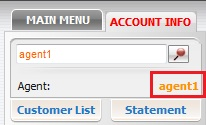
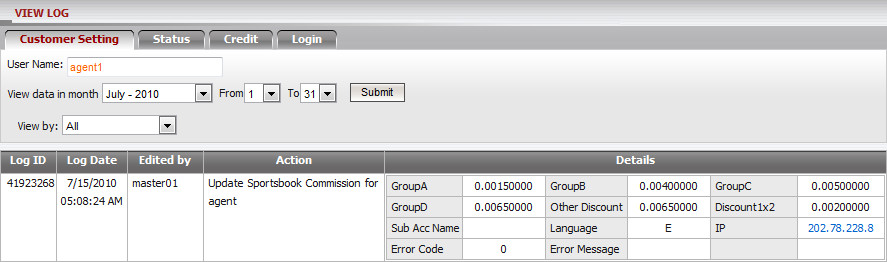
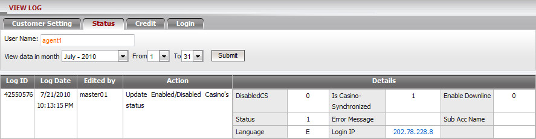
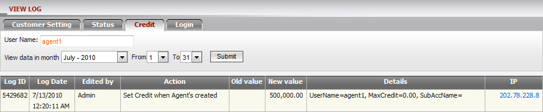
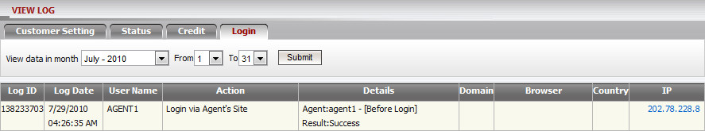
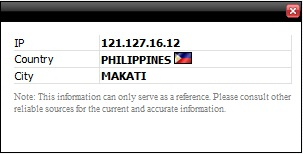

View Log
This function allows Agent to keep track or trace back all activities executed on his account and his down-lines.
Location:
- Top menu bar
- Account information

Feature supports:
Login user can view all update actions performed by himself/his down-lines or even admin in a selected date range. In general, we keep these log data available in one year. These actions are classified into 4 categories as below:
- Customer Setting: contains all log action of
- Creating new account/sub-account.
- Commission setting.
- Bet setting.
- Position taking setting.
- Customer/sub-account information.
- Password.
- Sub-account permission.
- Transfer condition.
User can filter the customer setting logs by log types: Position Taking, Commission, Bet Setting and General Info.

- Status: contains all log action of
- Open/Closed/Suspended.
- Allowed/Disallowed Outright.
- Enabled/Disabled status.

- Credit: contains all log action of
- Updating given credit.
- Clearing credit.

- Login: contains login information of
Currently do not support to view login information of member.

IP Information:
A pop-out frame will be appeared when clicks on any IP. This frame contains the Country/City of this IP (figure "IP Info").

IP Info
Note:
- Permission of Sub-account is set as below:
- With Update-Account Permission: can view log of Customer Setting/Status/Credit/Login.
- Without Update-Account Permission: can view log of Login information only.